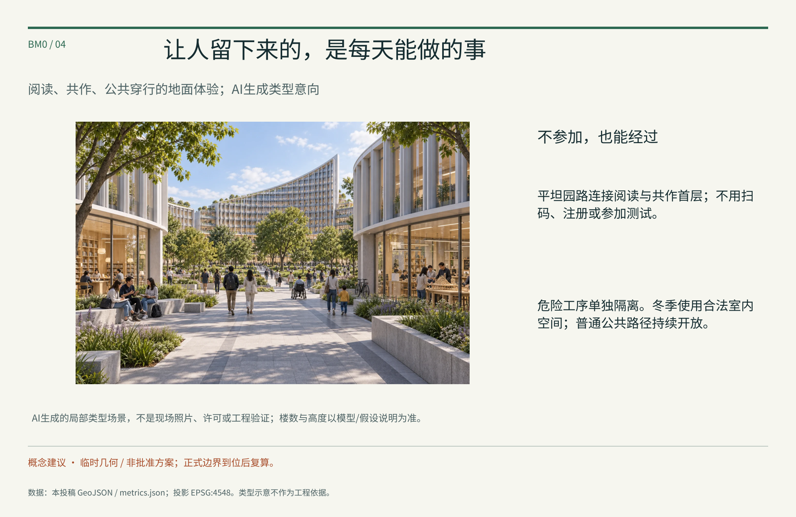
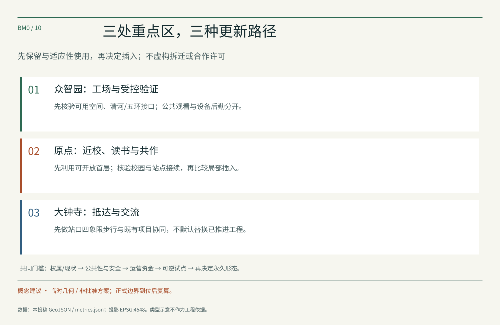

全线总图以南北带状临时模型为准；局部生成图不是全线鸟瞰。概念落位未匹配实际地块许可，不宣称专业评分通过。
临时模型范围
模型绿地率
模型公共空间率
三层范围与任务覆盖
官方文字范围：统筹研究约43.6平方公里、总体设计约11.4平方公里、重点区合计约368.4公顷。总体模型约11.41平方公里，不冒充官方精确边界。众智园、原点、大钟寺自北向南，分别侧重制造验证、提问共作、抵达交流。
任务响应保留7个案例、12张AI场景卡、3个验证场景、8类画像、3个主地标、8要素及9个项目包；完整条目、责任和退出机制见正文与矩阵。
任务覆盖矩阵 · 设计深度证据总览地图
一条京张，四重海淀
遗址公园作骨架，三处重点区各司其职

交通慢行与蓝绿公共空间
三段流动的山，连接南北五园
地面网络连续，山形局部起伏；不建数公里连续巨型连廊

建筑与五园
五园：建筑、街巷与园林共同成圆
四个建筑型组团 + 一个景观园；临时模型落位，不是实际地块许可

让人留下来的，是每天能做的事
阅读、共作、公共穿行的地面体验；AI生成类型意向

园林、学院、中关村，在京张相遇
历史背景有出处，空间选择是本方案的当代转译

重点区域
三个场所，三种不可替代的日常
原点提问，众智园制作，大钟寺首用；图中位置均为临时模型

先匹配条件，再决定高点
已找到局部官方文件；未证明五园可统一建到80或100米

用地分区
生活与创新之间，留出公共地面
模型用地完整分区；不把概念分带当作现行控规

让走廊可穿越，让公园可停留
南北连续 + 五处东西缝合；无人设备不能占用公共通行

更新项目
三处重点区，三种更新路径
先保留与适应性使用，再决定插入；不虚构拆迁或合作许可

一套有边界的公共空间工具
六类组件形成空间语言；尺度为类型研究，不是工程批准

AI 场景与创新生态
从一个问题，到可维护的作品
八要素通过授权接口接入，所有合作均待洽谈

先试用公共性，再决定永久形态
64天是一轮驻留节奏，不是安全认证或既定安排

从海淀文明，到智能共同体
整体标识、文化导视与作品荣誉分别承担不同任务

连接海淀，而不假装已达成合作
交换对象、授权与回传路径；区域关系图不按地理比例

核心指标
可以复算的模型，不是精确红线
三项核心视觉指标同源；不做无来源的同行排名

自检状态
以当前 self_check.json 为机器检查记录；本页不把程序检查等同于正式专业评分。任何文件更新后必须重跑。
self_check.json来源与假设
临时边界与未知许可明确分开；已查部分高度文件但未逐地块匹配。连续公共路径优先，测试单独受控，普通使用不要求提供个人数据。
sources.json · assumptions.json · 版权与生成说明